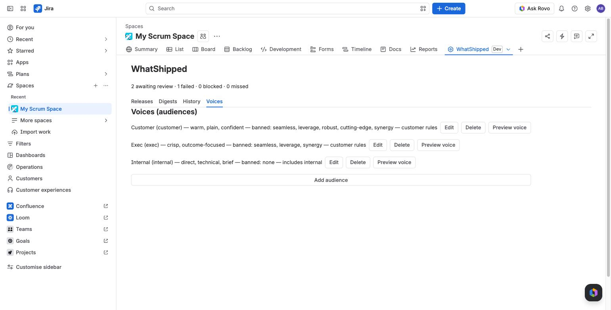

Voices
A voice (or audience) sets who a note is for: its tone, sections, banned words and whether internal work is included. Voices belong to a project.

The three standard voices
Every project starts with three.
| Customer | Internal | Exec | |
|---|---|---|---|
| Tone | warm, plain, confident | direct, technical, brief | crisp, outcome-focused |
| Sections | New, Improved, Fixed | Shipped, Fixed, Internal changes, Carried over / reopened | Outcomes, Risks and follow-ups |
| Bullet limit | 10 per section | 15 per section | 8 in total |
| Internal-labelled issues | excluded | included | excluded |
| Security-labelled issues | one generic line | full detail | one generic line |
| Issue keys in text | hidden | shown | hidden |
| Banned terms | seamless, leverage, robust, cutting-edge, synergy | none | seamless, leverage, synergy |
Every bullet still cites its issues on the review screen, whatever the voice.
Where to edit voices
On the Voices tab of the WhatShipped project page, or in Project settings > WhatShipped.
Editing a voice
Choose Edit next to a voice. You can change:
- Name.
- Tone preset, a few words such as "friendly, short".
- Voice notes, up to 600 characters of guidance.
- Sections, one per line as
Heading | instruction. - Banned terms, comma separated. The checker removes any bullet that uses one, including forms like "seamlessly".
- Max bullets per section.
- Exemplar paragraph, up to 800 characters of text in the style you want.
- Include internal changes. On: internal-labelled issues are used and security issues keep their detail. Off: customer rules apply.
- Show issue keys in text.
Choose Save.
Adding a voice
Choose Add audience. A new voice starts from the customer rules, or the internal rules if you turn on Include internal changes.
Preview a voice
Choose Preview voice to draft a short sample from the project's six most recently resolved issues. It costs about $0.03 and appears in History.
Deleting a voice
Choose Delete. The voice is removed straight away. If any schedules used it, they are moved to the Customer voice and a message tells you how many.
Voices learn from your edits
When you publish, each bullet you changed is saved as a before and after pair for that voice. Recent pairs are shown to the model as examples next time. See Review and edit.